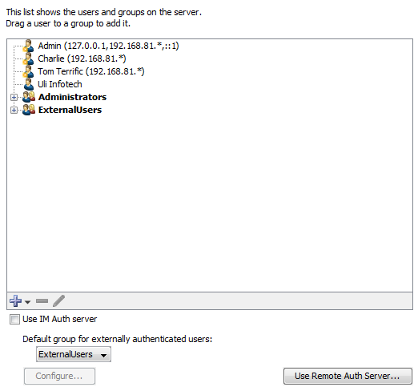
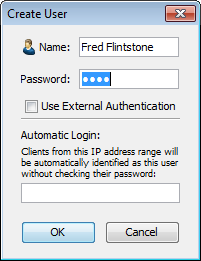
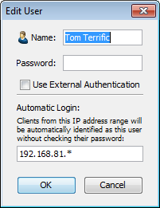
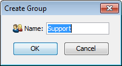
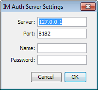

Users and Groups
Use the Users panel of the Server Settings window to add
and edit users and groups,
to assign users to groups, and to assign privileges
and access to maps.
Note: The Server Settings window is
available only to users who have administration privileges.
The Users Panel
Use the Users panel to maintain the list of users and groups allowed
to access the various servers.
- To add a user, click New User....
- To add a group, click New Group...
- To remove a user or group, click to select the user
or group, then click Remove.
- To edit a user or group's information, click to select
the user or group, then click Edit...
- To use the InterMapper Authentication server, select the Use IM Auth Server check box. Click Configure... to open the InterMapper DataCenter to set up the IMAuth Server.
- To use an Authentication Server on another computer, click Use Remote Auth Server...
- Choose a Default group for externally authenticated users from the dropdown menu.
The example below shows a typical user and group configuration in the
Users panel of the Server Settings window.

Setting up Users and Groups
What are Users and Groups?
- User
An individual identified by a user name and password, or identified
automatically from a clients' IP address or range.
- Group
A collection of users. A group can be given permissions to access
certain servers or maps, and may be given different levels of access
for a server or map.
Creating a New User
To create a new user:
- Click the + button and choose Add User... The User Information
dialog appears, as shown in the two examples below.
- Enter the name and password for the new user in the
Name and Password text boxes.
or
Omit the password and enter an IP address range in the Automatic
Login text box.
or
Select the Use External Authentication check box, and enter the username used by the external authentication server. No password is necessary; authentication is performed by the external authentication server.
How Automatic Login Works
- If a connection arrives from an address that matches the
Automatic Login address, the person is automatically logged in as the specified
user.
- If you supply both the password and automatic-login address,
the person is logged in automatically from the specified address, but must
supply a password when connecting from other addresses.
- Automatic-login addresses should be unique between users;
the resulting Login name is not guaranteed if two automatic-login addresses
are the same.
- For more information see Controlling
Access To Your Server.
 
Creating a new user
These two examples show two different users. 'Fred Flintstone' must log in with a name
and password, and 'Tom Terrific' is automatically identified when
connecting from IP address 192.168.*.*.
Editing User Information
To edit the information about a user:
- In the user list, click to select the user you want
to edit.
- Click Edit... or double-click the user
entry. The User Information dialog appears, containing information for
the selected user.
Managing Users and Groups
A group is a collection of users, all of whom have the same set of permissions.

New group window. Enter the name
of the
new group in this window.
To create a new group:
- Click the + button and choose Add Group... The Group Information
dialog appears, as shown above.
- Enter the name of the new group.
- Click OK. The new group appears in
the User list.
Adding and Removing Group Members
To view the users in a group:
Click the plus sign (+) to the left of the group to expand it.
To add a user to a group:
Click and drag the user's entry to the group entry. The user appears
in the list of users for that group.
To remove a user from a group:
- Expand the group list to view the users in the group.
- Click the entry for the user you want to remove,
and click the Remove button. A confirmation dialog appears.
- Click OK. The user is removed from
the group.
Note: When you remove a user from
a group, the user definition is removed only from the group, not from
the user list. To remove a user completely from the list and all groups,
see Removing Users and Groups below.
Removing Users and Groups
To delete a user or group completely:
- Click to select the user you want to remove.
- Click the Remove button. A confirmation
dialog appears.
- Click OK to confirm. The user or group
entry is removed from the list.
Note: The Administrators group
is a special group that is always present, and cannot be removed.
Note: The FullWebAccess group is a special group you define.
If present, its members can view all web pages.
Note: The FullLogAccess group is a special group you define.
If present, its members can view all log files.
Note: The FullTelnetAccess group is a special group you define.
If present, its members have full access to the Telnet server.
Configuring the InterMapper Authentication Server
|
Click the Use Remote Auth Server... button to connect to an InterMapper Authentication Server installed on a different machine from InterMapper. For more information, see Authentication Server.
Note: If the InterMapper Authentication Server is installed on the same machine as InterMapper, you need only check the Use IM Auth Server check box. The default server and port are used, and there is no need to enter a name or password.
|

|
Importing Users and Groups
Use the Import button to upload a file containing data for users and groups. For information on importing data, see Importing Data. For information on the User/Group data structure, see User Attributes.